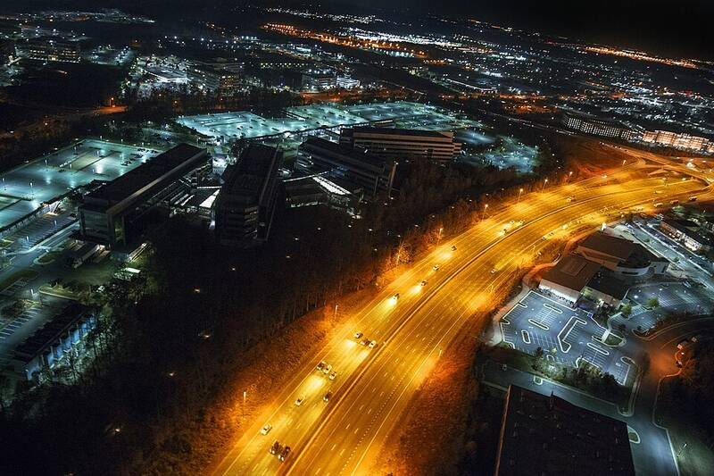

National Reconnaissance Office
Chantilly, VA

Builds and operates U.S. spy satellites for the intelligence community. 1
Open in the interactive Watcher
Sources
- National Reconnaissance Office Wikipedia
Chantilly, VA

Builds and operates U.S. spy satellites for the intelligence community. 1
Open in the interactive Watcher